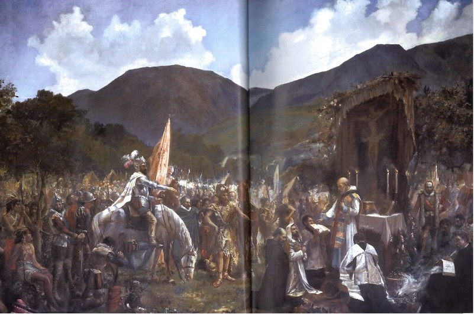

Sobre la fundación de Bogotá pareciera que todo está dicho: que la fundó Gonzalo Jiménez de Quesada, que él mismo ordenó construir doce chozas y que el padre fray Domingo de las Casas celebró la primera misa en lo que hoy es la plaza de Bolívar. Pero hay otras versiones no tan conocidas que es importante traer a colación: que no fue un fundador sino tres los que dieron vida a esta ciudad, que Quesada podría ser de origen judío, que la primera misa fue en honor a las doce tribus de Israel y no a los doce apóstoles –lo cual confirmaría su origen de cristiano converso, tesis del historiador colombo-polaco Juan Friede- que fue fundada dos veces y que el primer nombre de la capital fue Nuestra Señora de la Esperanza.

A pesar de que han corrido litros de tinta sobre la historia de Bogotá, lo cierto es que fueron pocos los cronistas que dejaron testimonios de aquellos primeros años. Uno de ellos, el poeta Juan de Castellanos, amigo personal de Quesada, aseguraba que la primera misa se hizo “en memoria de las doce fuentes de Elín por dónde estos pasaron, y de las doce piedras que sacaron del Jordán y pusieron en la tierra de Gálgala”. La tesis de que fue en honor de los apóstoles provino del propio de Las Casas.
Acerca del nombre de la ciudad esa es otra historia: Bogotá, Facatá o incluso Mueketá –que significarían algo así como fin del valle, remate de sierra o extremidad del campo- era un poblado indígena ubicado en un lugar entre Funza y Cota, como se aprecia en el antiguo mapa que dibujó el cacique Diego de Torres, hacia 1538; en su Gramática Chibcha, Ezequiel Uricoechea dice que los aborígenes llamaban a la capital Theusa o Theusaquillo. Santafé fue dado por la Corona española el 27 de julio de 1540, según petición que hizo Sebastián Rodríguez. Si hubiera prosperado la idea de Bolívar, de acuerdo a lo planteado en el Congreso de Angostura, en 1819, nuestra capital se denominaría hoy Las Casas, en homenaje al primer sacerdote de la ciudad, según relata en sus memorias Florencio O´leary, su edecán.
Volviendo a la azarosa historia de la fundación de Bogotá, y para remarcar el origen mestizo y multicultural de nuestra capital, es interesante traer a colación la narración de Posada, al referirse a lo que hicieron las huestes europeas tan pronto terminaron la ceremonia de constitución jurídica del nuevo poblado: “jefes y soldados, extranjeros y chibchas, se entregaron a festejar el bautismo de aquella ciudad (...) Todos se dirigieron a las orillas del (río) Fucha, y allá hicieron carreras de caballos, danzas y juegos de cañas”, embebidos de chicha y vino. Naturalmente, unos meses después, nacieron las primeras bogotanas y bogotanos mestizos, origen de la diversa e incluyente ciudad actual. La fundación de Bogotá tiene dos momentos, uno de facto y otro jurìdico. La fundación de facto se dio el 6 de agosto de 1538, cuando Gonzalo Jiménez de Quesada estableció un cuartel militar o campamento al que llamaron Nuestra Señora de la Esperanza, en lo que hoy es el Chorro de Quevedo. La fundación jurídica se dio siete meses y ventiún dìas más tarde, el 27 de abril de 1539, cuando se cumplió con la totalidad de los requisitos y procedimientos exigidos por las autoridades españolas para el establecimiento y reconocimiento de una ciudad, esto es el nombramiento de alcaldes y entrega de las correspondientes varas en señal de autoridad y jerarquía, la elección de regidores, la constitución del Cabildo, la demarcación de calles y cuadras, etc.
El documento más explícito encontrado hasta ahora, y que da fecha precisa de la fundación jurídica de la ciudad, con el nuevo nombre de Santafé, es el testimonio del capitán Honorato Vicente Bernal, acompañante de Nicolás de Federman y testigo presencial de este acontecimiento. En una carta que Bernal le envió al teniente Pedro de Ursúa asegura que las tropas de Quesada llegaron a Bogotá en marzo de 1539 y que “a veintisiete de abril del dicho año (…) se nombró a alcaldes y regidores de ella”. Pero fue el 6 de agosto de 1538, el día en que el reino de los muiscas fue ocupado en nombre del emperador Carlos V de España, la fecha adoptada oficialmente para la fundación de la ciudad. De acuerdo con el historiador Ernesto Cortés Ahumada, “esta fecha, que se festejaba por los descendientes de los conquistadores y la demás población española y mestiza en el siglo XVI, podría, pues, haber sido la fecha de la primera misa rezada en el pueblo del cacique Bogotá, que marcó la toma de posesión definitiva del Nuevo Reino. Lo acaecido en aquel día pudo haber sido interpretado por el cura de Tunja, Juan de Castellanos, y, siguiendo a éste, por Fray Pedro Simón y después Lucas Fernández de Piedrahíta, Alonso de Zamora y otros cronistas de los siglos XVII y XVIII, como la fundación de la ciudad”. Sea como fuere, a partir de 1539, la villa dejó de llamarse Nuestra Señora de la Esperanza y fue rebautizada como Santafé. Y casi tres siglos más tarde, en 1819, después de la Independencia, la ciudad recibió el nombre indígena de Bogotá, como se denominaba a la antigua capital Muisca y nombre que en época de la Colonia tenía la actual población de Funza. El 27 de julio de 1540, el emperador Carlos V elevó a Santafé a la categoría de ciudad y ocho años más tarde, en 1548, le otorgó el título de “muy noble y muy leal ciudad más antigua del Nuevo Reino” y por escudo de armas le otorgó uno en el que un águila negra aparece en un campo de oro, con una granada abierta en cada garra y adornado de algunos ramos de oro en campo azul. Santafé fue la sede del gobierno de la Real Audiencia del Nuevo Reino de Granada (creada en 1550). A partir de 1717 fue capital del Virreinato de la Nueva Granada, acogiendo a los virreyes, tras haber disputado con Cartagena de Indias la sede virreinal. En 1819 se convirtió en capital de la Gran Colombia hasta 1830, cuando este estado se disolvió dando inicio a las repúblicas de Ecuador, Venezuela y Colombia (Panamá se separaría en 1903). Bogotá es hoy una ciudad cosmopolita, en constante expansión y una de las áreas metropolitanas de mayor crecimiento en América del Sur. Sus 7'881.156 habitantes, incluyendo multitud de inmigrantes de todo el mundo, hacen de ella un verdadero microcosmos de la nación. Principal capital industrial y financiera del país, Bogotá participa aproximadamente con el 25% del PIB industrial y más del 50% del PIB financiero. Es el mayor foco de atracción de inversión extranjera directa (IED) y el mercado de mayor tamaño a nivel nacional. En el contexto internacional, Bogotá es percibida como una apuesta válida para articular la cultura con las dinámicas del desarrollo social, económico y político. Eso se refleja en las quince menciones, reconocimientos y premios internacionales recibidos en todos los frentes desde 1996.
Ir al principio de la historia